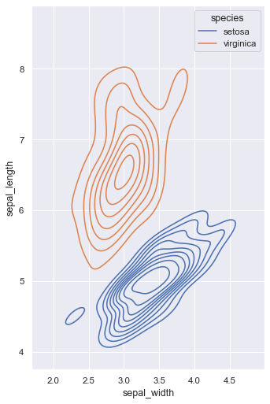

Multiple bivariate KDE plots¶
seaborn components used: set_theme(), load_dataset(), kdeplot()
import seaborn as sns
import matplotlib.pyplot as plt
sns.set_theme(style="darkgrid")
iris = sns.load_dataset("iris")
# Set up the figure
f, ax = plt.subplots(figsize=(8, 8))
ax.set_aspect("equal")
# Draw a contour plot to represent each bivariate density
sns.kdeplot(
data=iris.query("species != 'versicolor'"),
x="sepal_width",
y="sepal_length",
hue="species",
thresh=.1,
)